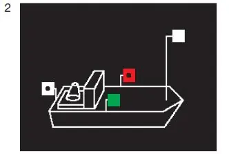
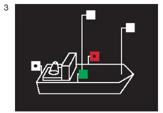

§ 3.08 Bezeichnung einzeln fahrender Fahrzeuge mit Maschinenantrieb(Anlage 3: Bild 2, 3)
Binnenschifffahrtsstraßen-Ordnung
1. Ein einzeln fahrendes Fahrzeug mit Maschinenantrieb muss bei Nacht führen:
a) ein Topplicht, das auf dem vorderen Teil des Fahrzeugs gesetzt werden muss; b) die Seitenlichter, die in gleicher Höhe und in einer Ebene senkrecht zur Längsebene des Fahrzeugs gesetzt werden müssen. Bei Fahrten auf Flüssen müssen die Seitenlichter mindestens 1,00 m tiefer als das Topplicht gesetzt werden. Bei Fahrten auf Kanälen müssen die Seitenlichter nach Möglichkeit 1,00 m tiefer als das Topplicht, sie dürfen jedoch nicht höher als dieses gesetzt werden. Sie müssen mindestens 1,00 m hinter dem Topplicht gesetzt und binnenbords derart abgeblendet werden, dass das grüne Licht nicht von Backbord, das rote Licht nicht von Steuerbord gesehen werden kann; c) ein Hecklicht auf dem Achterschiff. |  |
2. Ein einzeln fahrendes Fahrzeug mit Maschinenantrieb mit mehr als 110,00 m Länge muss bei Nacht außerdem ein zweites Topplicht führen und zwar auf dem Achterschiff und in größerer Höhe als das vordere Licht. |  |
3. Das Fahrzeug mit Maschinenantrieb muss die Lichter nach Nummer 1 und 2 auch dann führen, wenn ihm bei Nacht vorübergehend auf kurzer Strecke ein Vorspann vorausfährt; der Vorspann muss die Lichter nach § 3.09 Nummer 1 Buchstabe a Satz 1 führen.
4. Das Fahrzeug mit Maschinenantrieb muss die Bezeichnung nach § 3.09 Nummer 3 Satz 1 Buchstabe b führen, wenn ihm bei Tag vorübergehend auf einer kurzen Strecke ein Vorspann vorausfährt; der Vorspann muss die Bezeichnung nach § 3.09 Nummer 1 Buchstabe b Satz 1 führen.
5. Die Nummern 1 bis 4 gelten nicht für ein Kleinfahrzeug oder für eine Fähre; für ein Kleinfahrzeug gilt § 3.13, für eine Fähre § 3.16.